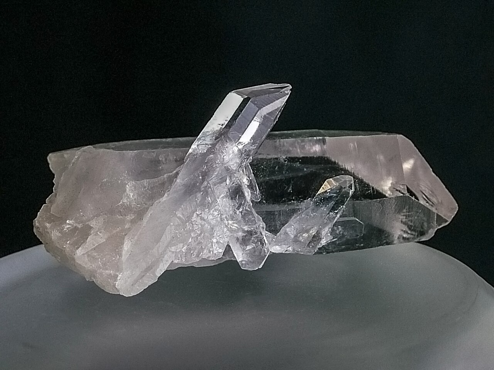

Indica
Indica is a reddish stone that turns purple when ground; ¹ another kind is white. ¹ Its name comes from the place where it is found, though that place is not named.
Generic
Description
Indica takes its name from its place of origin. One kind is reddish and becomes purple when ground; another is white. ¹
Variants
| Variety | Appearance | Properties |
|---|---|---|
| Red Indica | Reddish before grinding. | Turns purple when ground. ¹ |
| White Indica | White. | No virtue is assigned. ¹ |
Subtype I: Red Indica
This Indica is reddish and turns purple when ground. ¹
Subtype II: White Indica

Clear quartz crystals illustrate the white Indica form (source).

This kind of Indica is white. ¹ No virtue is assigned to it.
Sources
1. Camillo Leonardi — Speculum Lapidum
Indica is a reddish-colored stone; if ground, it turns purple. Another type identified by the same name is white in aspect. It takes its name from the place where it was found. It seems to have no virtue.